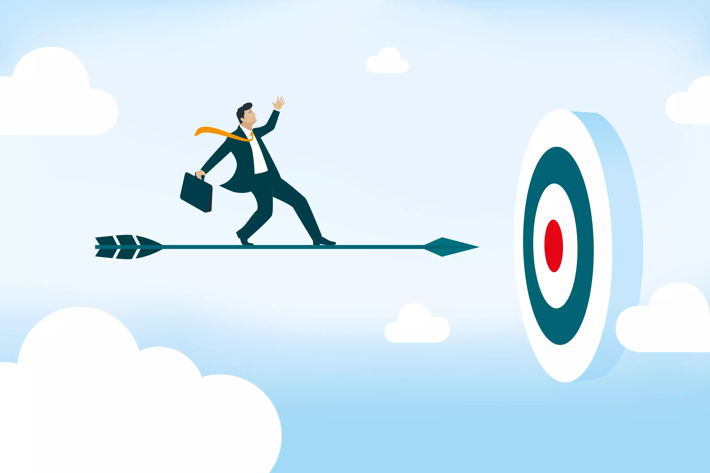
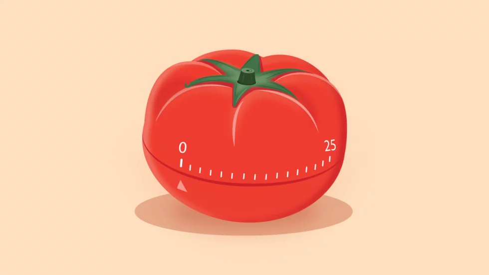
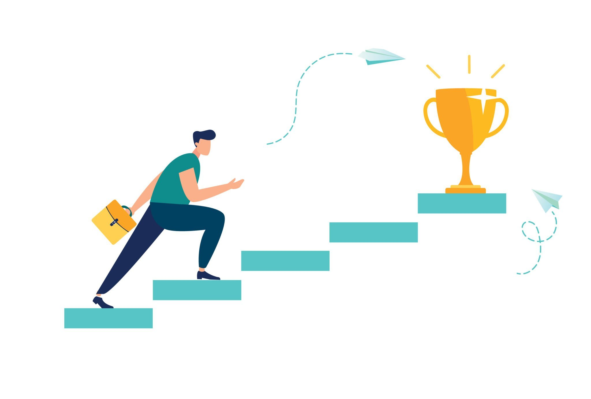

Рекомендации по борьбе с прокрастинацией:
Установите ясные цели и приоритеты:
Определите, что важно и что срочно, и разбейте свои задачи на более мелкие, управляемые этапы. Это поможет вам четко понимать, куда двигаться, и избежать чувства перегрузки.
Создайте расписание и придерживайтесь его:
Разработайте ежедневное расписание с четко определенным временем для выполнения задач. Постарайтесь придерживаться этого расписания, чтобы избежать соблазна откладывать дела на потом.
Используйте метод "помидора":
Применяйте технику "помидора", которая предполагает работу в течение определенного времени (обычно 25 минут) без перерыва, за которым следует короткий перерыв. После нескольких "помидоров" сделайте более продолжительный перерыв.
Избегайте соблазна отвлекаться:
Ограничьте доступ к источникам отвлечений, таким как социальные сети, мессенджеры и т. д., во время выполнения задач. Можно использовать приложения для блокировки сайтов или установить временные ограничения на использование устройств.
Наградите себя за выполнение задач:
Поощряйте себя за достижения. Это может быть что-то приятное, например, прогулка на свежем воздухе, время для любимого хобби или просмотр фильма.
Обратитесь за поддержкой и сотрудничеством:

Поделитесь своими целями и планами с близкими друзьями, коллегами или членами семьи. Иногда поддержка окружающих может стать дополнительным мотиватором для борьбы с прокрастинацией.